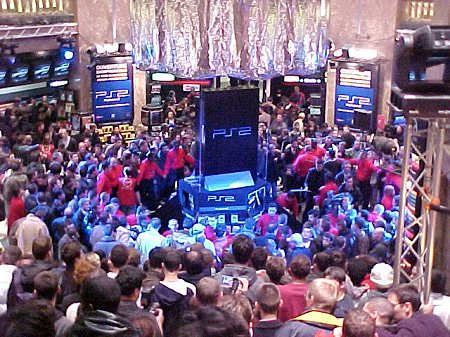
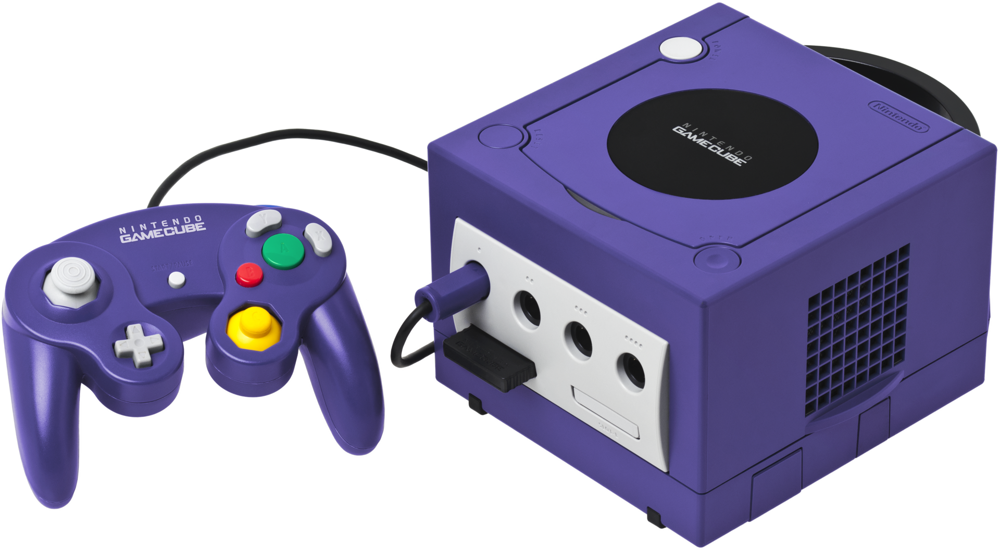
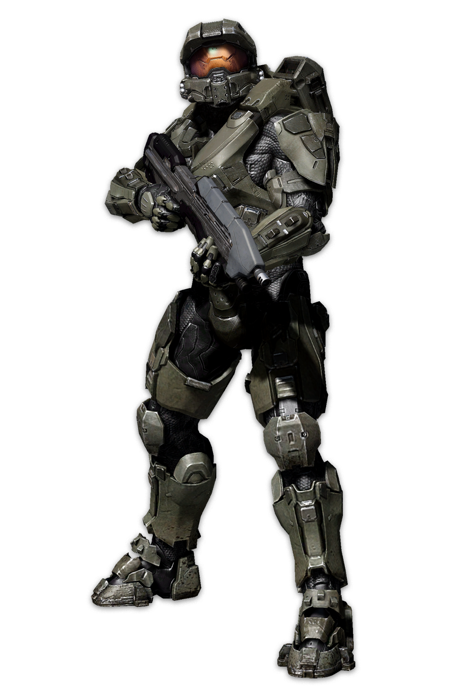

|
|
Histoire du Jeu Vidéo
|
|
|
Histoire du Jeu Vidéo
|
|  Lancement de la Ps2 au Virgin store de Paris |
Après l’annonce par Sega de la Dreamcast, largement en avance par rapport à ses concurrentes, Sony annonce que sa
Playstation 2 est quasiment prête et sortira quelques mois plus tard. Les deux firmes l'ignorent encore, mais le
succès ultime de Sony est proche, au détriment de Sega pour qui la fin des consoles de salon n'est plus qu'une question de
temps. En effet, magrès des specifications bien inferieures à la Dreamcast, la console de Sony va avoir un large succès auprès des joueurs, grace notamment à un catalogue de jeux complet et avec de nombreuses licences à succes comme Grand Turismo, God of War ou encore Metal Gear Solid. Sega ne s'en relèvera pas, et le 31 mars 2001, la firme cessera la commercialisation de la console Dreamcast. La firme ne produira plus de nouvelle console et se retirera ainsi complètement du secteur hardware afin de se restructurer pour devenir un éditeur tiers, pendant que La Ps2 deviendra la console de jeu la plus vendue dans le monde entier de tous les temps. |
 Sega Dreamcast |
|  Le Gamecube de Nintendo |
Après une attente de plus de 8 mois après sa sortie au Japon, le Gamecube de Nintendo débarque en Europe le 3 mai 2002. Malgré d'excellents titres comme Zelda : the Wind waker ou encore Star Wars Rogue Leader, le GameCube ne rencontre pas le succès de ses ainées et ne restera que 5 ans sur le marché des consoles. Et pour cause, quelques mois auparavant, un nouvel acteur débarquait dans le marché des consoles : Microsoft avec sa Xbox incluant directement "directX", la collection de bibliothèques liée à la programmation de jeux issue du monde du PC. La firme américaine s'emploie a mettre en avant sa nouvelle console qui, niveau spécifications, devance largement ses concurentes , et le fera notamment en dévoilant le jeu Halo, veritable démonstration de puissance graphique à sa sortie, et précurseur de nombreux fps qui s'inspireront plus tard de son gameplay novateur. Sur PC, le multijoueur est en pleine révolution avec des jeux comme Diablo 2 et 3, word of warcraft et les joueurs se retrouvent dans des cybercafés pour jouer en LAN à Counter Strike. |  Le Master Chief, symbole de Halo |